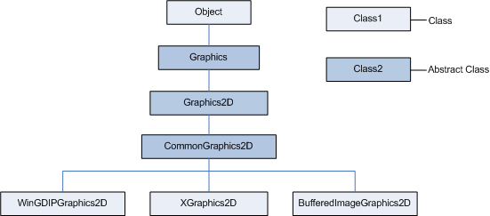

Disclaimer and Legal Information
CommonGraphics2D Class Internals
Platform Specifics in DRL Java 2D* Graphics
| Version | Version Information | Date |
| Initial version | Alexey Petrenko, Svetlana Konovalova: document created. | May 18, 2006 |
Copyright 2005-2006 The Apache Software Foundation or its licensors, as applicable.
Licensed under the Apache License, Version 2.0 (the License); you may not use this file except in compliance with the License. You may obtain a copy of the License at http://www.apache.org/licenses/LICENSE-2.0.
Unless required by applicable law or agreed to in writing, software distributed under the License is distributed on an AS IS BASIS, WITHOUT WARRANTIES OR CONDITIONS OF ANY KIND, either express or implied. See the License for the specific language governing permissions and limitations under the License.
Portions, Copyright (C) 1991-2005 Unicode, Inc. The following applies to Unicode
COPYRIGHT AND PERMISSION NOTICE.
Copyright (C) 1991-2005 Unicode, Inc. All rights reserved. Distributed under the Terms of Use in http://www.unicode.org/copyright.html. Permission is hereby granted, free of charge, to any person obtaining a copy of the Unicode data files and any associated documentation (the "Data Files") or Unicode software and any associated documentation (the "Software") to deal in the Data Files or Software without restriction, including without limitation the rights to use, copy, modify, merge, publish, distribute, and/or sell copies of the Data Files or Software, and to permit persons to whom the Data Files or Software are furnished to do so, provided that (a) the above copyright notice(s) and this permission notice appear with all copies of the Data Files or Software, (b) both the above copyright notice(s) and this permission notice appear in associated documentation, and (c) there is clear notice in each modified Data File or in the Software as well as in the documentation associated with the Data File(s) or Software that the data or software has been modified.
THE DATA FILES AND SOFTWARE ARE PROVIDED "AS IS", WITHOUT WARRANTY OF ANY KIND, EXPRESS OR IMPLIED, INCLUDING BUT NOT LIMITED TO THE WARRANTIES OF MERCHANTABILITY, FITNESS FOR A PARTICULAR PURPOSE AND NONINFRINGEMENT OF THIRD PARTY RIGHTS. IN NO EVENT SHALL THE COPYRIGHT HOLDER OR HOLDERS INCLUDED IN THIS NOTICE BE LIABLE FOR ANY CLAIM, OR ANY SPECIAL INDIRECT OR CONSEQUENTIAL DAMAGES, OR ANY DAMAGES WHATSOEVER RESULTING FROM LOSS OF USE, DATA OR PROFITS, WHETHER IN AN ACTION OF CONTRACT, NEGLIGENCE OR OTHER TORTIOUS ACTION, ARISING OUT OF OR IN CONNECTION WITH THE USE OR PERFORMANCE OF THE DATA FILES OR SOFTWARE.
Except as contained in this notice, the name of a copyright holder shall not be used in advertising or otherwise to promote the sale, use or other dealings in these Data Files or Software without prior written authorization of the copyright holder.
Additional Terms From the Database:
Copyright (C) 1995-1999 Unicode, Inc. All Rights reserved.
Disclaimer:
The Unicode Character Database is provided as is by Unicode, Inc. No claims are made as to fitness for any particular purpose. No warranties of any kind are expressed or implied. The recipient agrees to determine applicability of information provided. If this file has been purchased on magnetic or optical media from Unicode, Inc., the sole remedy for any claim will be exchange of defective media within 90 days of receipt. This disclaimer is applicable for all other data files accompanying the Unicode Character Database, some of which have been compiled by the Unicode Consortium, and some of which have been supplied by other sources.
Limitations on Rights to Redistribute This Data:
Recipient is granted the right to make copies in any form for internal distribution and to freely use the information supplied in the creation of products supporting the UnicodeTM Standard. The files in the Unicode Character Database can be redistributed to third parties or other organizations (whether for profit or not) as long as this notice and the disclaimer notice are retained. Information can be extracted from these files and used in documentation or programs, as long as there is an accompanying notice indicating the source.
This document introduces the Java 2D* [1] implementation, supplied as part of the DRL (Dynamic Runtime Layer) initiative, and gives details on its design.
The target audience for the document includes a wide community of engineers interested in using Java 2D* and in further work with the product to contribute to its development. The document assumes that readers are familiar with the Java 2D* technology and the Java* programming language.
This document uses the unified conventions for the DRL documentation kit.
The Java 2D* implementation is the collection of classes for a high-performance two-dimensional (2D) graphics and image processing. The package includes line and shape drawing, text and image rendering.
DRL Java 2D* is a fast and easily portable implementation of the Java 2D* technology, consisting of a number of classes for advanced graphics and image processing.
DRL Java 2D* supports the Windows* and Linux* operating systems for the IA-32 architecture. The Windows* version mostly uses the GDI+ (Graphics Device Interface plus) library, but can also use the GDI library for better performance. For example, Java 2D* can use GDI instead of GDI+ to speed up image processing. The Linux* version uses Xlib and xft libraries.
DRL Java 2D* has portability in its design, so that you can easily port it to other operating systems and hardware architectures. For details and how to port Java 2D* on other platforms see Java 2D* Portability.
Figure 1 below shows the Java 2D*
structure, demonstrating the inheritance relationship of the
Graphics2D classes:

Figure 1: Inheritance Relationship of the
Graphics2D Classes
java.awt.Graphics and
java.awt.Graphics2D define the public
interface for all Graphics2D
implementations.org.apache.harmony.awt.gl.windows.WinGDIPGraphics2D
and
org.apache.harmony.awt.gl.linux.XGraphics2D
are the Windows* and Linux* versions respectively of the
org.apache.harmony.awt.gl.CommonGraphics2D
class, which implements the abstract methods of the
Graphics2D class.org.apache.harmony.awt.gl.image.BufferedImageGraphics2D
class deals with drawing on buffered images.For more information on the classes see Platform Specifics in DRL Java 2D* Graphics.
CommonGraphics2D
Class InternalsThe section specifies the CommonGraphics2D
class internal areas and gives description on their tools.
The CommonGraphics2D class splits all shapes
into a set of rectangles to unify the drawing process for
different operating systems and architectures. For this purpose
Java 2D* uses the
JavaShapeRasterizer and the
JavaLineRasterizer classes from the
org.apache.harmony.awt.gl.render package. The
JavaShapeRasterizer class splits an object
implementing a Shape interface into a set of rectangles and
produces a MultiRectArea object. The
JavaLineRasterizer class makes line drawing more
accurate and processes lines with strokes, which are instances
of the BasicStroke class.
To port the shape drawing to another platform you just need
to override rectangle-drawing methods. However, if your
operating system has functions to draw particular shapes, you
can optimize your subclass of the CommonGraphics2D
class by using this functionality in overridden methods.
Blitter classes draw images on the display or buffered
images. All blitters inherit the
org.apache.harmony.awt.gl.render.Blitter
interface.
Blitters are divided into:
DRL Java 2D* also uses blitters to fill the
shapes and the user-defined subclasses of the
java.awt.Paint class with paints, which the system
does not support.
Text renderers draw strings and glyph vectors. All text
renderers are subclasses of the
org.apache.harmony.awt.gl.TextRenderer class.
Java 2D* does not have its own font
rendering engine and uses native libraries instead: the GDI
library on the Windows* OS and the Xft,
FontConfig and FreeType libraries on the Linux* OS. The java.awt.font.NumericShaper class uses data
from the Unicode
Character Database [2] for retrieving character properties.
The Windows* implementation - the
WinGDIPGraphics2D class - for the most part is
based on the GDI+ library, which has the routines for drawing
all types of shapes filling them with a solid color brush and a
linear gradient brush, but it does not support an acyclic
gradient brush. The Java 2D* package doesn't
use the native library texture paint option, resorting to
Blitters instead. However, the major
part of the shape drawing and filling routines is native in
this class.
As for the Linux* implementation - the
XGraphics2D class - the Xlib library has no
methods to draw and fill free-form shapes. So, the
corresponding XGraphics2D methods use Rasterizers, inherited from the
CommonGraphics2D class.
The actions to port the DRL Java 2D* package to another architecture or operating system, or to use it with another library depend on the particular platform. The main steps are the following:
org.apache.harmony.awt.gl.CommonGraphics2D.
org.apache.harmony.awt.gl.windows.<SomeLib>Graphics2D
org.apache.harmony.awt.gl.<SomeOS>.<SomeLib>Graphics2D
[1] Java 2D* Technology http://java.sun.com/j2se/1.5.0/docs/guide/2d/index.html
[2] Unicode Character Database http://www.unicode.org/ucd/
* Other brands and names are the property of their respective owners.